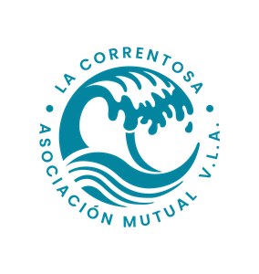

Presentación al Honorable Concejo Deliberante
Matrícula #136 · Predio CEF n.°7 · Millaqueo 124
“Asociaciones constituidas libremente sin fines de lucro por personas inspiradas en la solidaridad, con el objeto de brindarse ayuda recíproca frente a riesgos eventuales o de contribuir a su bienestar material y espiritual, mediante una contribución periódica.”
— Ley 20.321, Art. 2
Personas que se asocian voluntariamente para cuidarse y sostenerse mutuamente.
No hay dueños ni accionistas. Los asociados son, a la vez, los propietarios y los destinatarios del servicio.
Todo lo que se gana se reinvierte en el proyecto y en la comunidad de asociados. Nada se distribuye a título personal.
Regulada por la Ley 20.321 y supervisada por INAES, con estatuto aprobado por asamblea.
Nace en Buenos Aires la Sociedad Francesa de Socorros Mutuos, la primera mutual del país. La siguen la San Crispín (1856) y la Unione e Benevolenza (1858), todas creadas por colectividades de inmigrantes europeos para asistencia médica, educación y auxilio entre compatriotas.
El 25 de mayo, colonos galeses del valle inferior del Chubut fundan el antecedente más temprano de compra y venta colectiva organizada en Argentina. Surge como respuesta a los altos costos de intermediación. Abrió sucursales en Puerto Madryn, Dolavon, Gaiman, Comodoro Rivadavia y Rawson.
Un antecedente patagónico de la misma lógica que hoy impulsa a La Correntosa.
Se consolida un crecimiento explosivo del mutualismo en Argentina. De todas las mutuales fundadas en esta década, 697 continúan vigentes hoy —la década con más mutuales activas del país—.
Se sanciona la Ley Nacional de Mutuales que aún rige. Define la mutual como “asociación sin fines de lucro, inspirada en la solidaridad, con el objeto de brindarse ayuda recíproca”. Regula los servicios, las categorías de socios y la supervisión por parte de INAES.
400 mutuales nuevas se inscriben en lo que va de la década. La pandemia y la crisis de consumo impulsan una nueva ola de organización comunitaria, con foco creciente en soberanía alimentaria y economía solidaria.
La Correntosa (2022) es parte de esta nueva ola.
Fundada el 28 de febrero en Neuquén Capital, es la mutual más antigua de la provincia. Nació para asistir a la colectividad española y sigue vigente como referencia histórica.
Primera mutual gremial de la provincia. Da cobertura a personal policial en activo y retirado. Un hito del mutualismo por afinidad laboral en Neuquén.
Creada el 5 de octubre, articula a las mutuales de la provincia y las representa ante INAES y los órganos públicos. Miembro de la Confederación Argentina de Mutualidades.
AMUC, nace en la órbita de la Universidad Nacional del Comahue. Da servicios a docentes, no docentes y alumnos. Se suman luego la Judicial (1983) y Fuente Serena en SMA (1997).
Inscripta el 17/10/2022, matrícula #136. Primera mutual en la historia de Villa La Angostura y primera mutual de proveeduría abierta a toda la comunidad en la provincia.
Uno de los servicios clásicos del mutualismo argentino, regulado por INAES. Organiza la compra colectiva de alimentos y bienes esenciales en vínculo directo con productores locales, agricultura familiar, PyMEs, cooperativas y fábricas recuperadas.
Locales, agricultura familiar,
PyMEs, cooperativas,
fábricas recuperadas.
Compra en forma colectiva,
sin intermediarios.
Acceso a alimentos sanos
y de origen conocido.
El productor fija el precio base. El margen sostiene la operación, no genera especulación.
Prioriza productos agroecológicos y acompaña a productores en transición hacia prácticas sin agrotóxicos.
Elegimos a los productores no sólo por el qué, sino por el cómo: formas de producción respetuosas con la tierra, las personas y el vínculo comunitario.
Red que articula productores del Bolsón, El Hoyo, Plottier, Picun Leufú, el Alto Valle y otros puntos de la región.
La Correntosa no está sola: el servicio de proveeduría mutual tiene décadas de trayectoria y referencias a lo largo de todo el país.
Red de Consumo Popular (2015). +50 productores de la economía popular y solidaria. Proveeduría física en Rosario de Santa Fe 569 + delivery. Activa en 2025.
Empleados de Comercio de Rosario, +30 años. Dos locales de proveeduría. Integra productores santafesinos en la coop. “Alimentos para la Nueva Argentina”.
Plataforma de la Mutual Argentina Comunidad (MAC). Alimentos de cooperativas, PyMEs y economías regionales. Venta online + red de mutuales adherentes.
Proveeduría mutual en Villa Cabrera, 700 m². Oferta amplia con perfil cooperativo. Abierta Lun-Sáb 8-21 hs. Parte de FEMUCOR.
Proveeduría de alimentos 100% online (tiendamavic.com.ar), con Food Pack de productos esenciales y envío a todo el país.
Proveeduría con foco regional: leche de Dolavon, dulces y textiles de la Comarca Andina, miel de Epuyén, chocolates de Trelew. Modelo cercano al de La Correntosa.
Somos parte de una historia
Colonos galéses organizándose en la Patagonia.
Inmigrantes europeos sosteniéndose en las primeras mutuales.
Redes de consumo popular recuperando la compra colectiva.
La misma lógica, retomada en cada generación:
organizarnos para comprar juntos frente a la concentración.
La primera mutual en la historia de Villa La Angostura. Una red construida en 5 años por una comunidad joven —entre 25 y 40 años— con ganas de hacer un aporte concreto al pueblo: organizarnos para acceder a alimentos justos y sostener a los productores de la región.
Durante la pandemia, desde la Mesa de Asociativismo de VLA, sostenemos una compra comunitaria mensual, todos los meses, sin interrupción, en escuelas de la localidad.
El 17 de octubre, el grupo se constituye como Asociación Mutual La Correntosa, matrícula #136 del INAES. Primera mutual en la historia de VLA.
Seleccionados entre 59 sitios del país por el Ministerio de Obras Públicas (Programa de Infraestructura de Entramados Productivos). Llegan los 2 containers al CEF n.°7.
En mayo abre la despensa en el CEF n.°7. 300+ productos agroecológicos y 27+ productores locales en red. La Ord. 4124/2024 aprueba el comodato.
Se ejecuta la consolidación estructural y el techo del espacio con el 1er financiamiento provincial de $12.000.000 (IADEP). Primera etapa finalizada.
Se gestiona el 2do financiamiento provincial de $30.000.000 para ejecutar el cerramiento completo del espacio y consolidar el proyecto multiuso.
Los ideales que sostienen el proyecto —lo que nos junta una y otra vez—.
Generar encuentro en una región donde el clima y la distancia muchas veces nos separan. Que vecinos y vecinas se reconozcan, compartan un espacio y se organicen para hacer cosas juntos.
Como horizonte hacia dónde caminar. Recuperar el derecho a decidir qué se produce y qué se come, entendiendo las dificultades particulares de producir en la cordillera.
Recuperar la relación con el alimento: saber qué comemos, de dónde viene, quién lo produjo y cómo. Decidir con información, no con marketing.
Aprender, compartir y divulgar prácticas agroecológicas. Acompañar a productores en transición, porque el cómo se produce importa tanto como el qué.
Apoyar a cooperativas, agricultura familiar, PyMEs y fábricas recuperadas. Priorizar una producción de escala reducida y calidad comprobada, fortaleciendo el entramado productivo que las cadenas concentradas dejan afuera.
Potenciar los circuitos cortos: que la economía circule cerca y se quede en el territorio. Red regional que articula productores del Bolsón, El Hoyo, Plottier, Picun Leufú y el Alto Valle.
Una mutual funciona con una figura que todos conocemos: la del club de barrio. Cambia la actividad, pero el espíritu es el mismo.
Donde el club organiza el deporte, nosotros organizamos la alimentación. La lógica es la misma: organizarse sin fines de lucro para lograr juntos lo que solos no podríamos.
Practicar un deporte en un club no lo pensamos como una transacción comercial: es salud, encuentro, cuidado del cuerpo y de los vínculos. Creemos que alimentarnos merece ese mismo lugar —salir de la lógica del negocio y recuperar la comida como un acto de salud, cultura, organización con otros consumidores y vínculo con quienes producen—.
Un circuito cerrado donde los excedentes —lo que queda después de cubrir los costos mínimos— vuelven al propio proyecto.
Cinco años de trabajo sostenido, en números concretos.
No creemos que esto pueda sostenerse en soledad. Por eso tejemos vínculos con organizaciones del territorio que comparten la lógica de cuidar lo común.
Convenio en gestión para acercar alimentos saludables al personal y articular con el área de nutrición.
Cooperativa de vivienda de VLA. Compartimos actividades, Fiesta de los Jardines y articulación sobre acceso al suelo.
Cooperativa de trabajo local con la que compartimos lógica asociativa y acciones de economía solidaria.
Convenio en gestión con la Asociación Trabajadores del Estado para acercar la despensa a sus afiliados.
Seccional local de la Asoc. Trabajadores de la Educación del Neuquén. Convenio para docentes y auxiliares del sistema educativo.
Integrados a la federación nacional. La Correntosa ocupa el rol de Secretaría de Mutuales.
Fuimos invitados a sumarnos a la Federación de Mutuales del Neuquén, que articula al sector mutualista provincial desde 1979. Un reconocimiento al trabajo sostenido y un paso hacia la integración regional.
Acompañamos la creación de la A. M. Red Yafütún en San Martín de los Andes (matrícula #138, 2024). Su grupo fundador eligió la figura de mutual a partir de nuestra experiencia y con nuestro acompañamiento. Hoy son la segunda mutual de proveeduría comunitaria en la cordillera neuquina.
Todos los miércoles, las y los jubilados tienen un 10 % de descuento en la despensa. Nuestra manera de acompañar a quienes sostienen la memoria colectiva de la comunidad.
Más de 300 productos agroecológicos, cooperativos y de agricultura familiar —organizados en nueve categorías—.
De estación, de productores regionales.
Integrales, orgánicas, a granel.
Nueces, almendras, pasas, damascos.
Cooperativas de yerbateras y productores.
Miel de la región, dulces caseros.
Pan, masas, fideos y ravioles caseros.
Quesos artesanales, yogures, leches.
Aceites de oliva, vinagres, encurtidos.
Jabones, detergentes y cremas biodegradables.
El servicio lo sostenemos con una estructura de costos baja: pocas personas dedicadas y muchos asociados que ponen el cuerpo. Así el costo final se mantiene accesible.
3 a 5 horas por día en tareas de logística, atención y gestión. Hoy reciben descuentos importantes en alimentos a cambio de su trabajo. Nuestro objetivo cercano es pagarles sueldos basados en el convenio de Comercio de Neuquén / VLA.
Aportan 5 horas por semana cada uno en compras, recepción, reposición y atención. Ya reciben descuentos en sus compras como reconocimiento al tiempo que donan al proyecto.
La Park Slope Food Coop (Brooklyn, 1973) funciona bajo una lógica similar: sus 17.000 miembros aportan unas horas de trabajo cada seis semanas y eso les permite que los asociados realicen cerca del 75% del trabajo, manteniendo la estructura de costos baja y los precios accesibles para toda la comunidad. El documental Food Coop (2016) retrata esa experiencia →
Es el mismo principio que el de un club de barrio: puede haber unas pocas personas rentadas para tareas como recepción, limpieza o mantenimiento, pero la gestión del proyecto la llevan los asociados de forma voluntaria. El fin no es generar trabajo, ni generar ganancias para repartir entre inversores: es generar excedentes que se reinvierten en la mutual —para seguir mejorando el servicio y manteniendo los precios accesibles—.
por mes · electricidad, internet y baño químico (Art. 2 del comodato)
≈ $1,5 M por año
por un mes de decoración en la vía pública (concurso de precios Nº 3/2026)
≈ 150 instalaciones · $186 000 c/u
Lo que VLA gasta en un mes de Pascuas equivale aproximadamente a 18 años de aporte municipal a la despensa. Y el día que terminemos el baño propio —previsto en el 2º crédito—, el gasto baja a la mitad.
Punto de partida. Dos containers cedidos por el Ministerio de Obras Públicas de la Nación como Módulo Despensa.
Se construye una plataforma de madera entre los dos containers, generando un espacio descubierto de uso común que funciona como terraza y punto de encuentro.
Con el 1er crédito provincial ($12M) se ejecutó la consolidación estructural y el techo a dos aguas sobre ambos containers, cubriendo también el espacio central que antes era deck abierto.
Con el 2do crédito provincial ($30M) se ejecutarán las paredes del espacio central con su abertura y ventanas, la construcción del baño y el piso definitivo de todo el espacio.
Para llevar adelante la obra del espacio gestionamos dos créditos provinciales con la Subsecretaría de Producción de Neuquén, a través del IADEP —Línea de Inversiones de Largo Plazo para Organizaciones—.
La mutual asume compromisos financieros a largo plazo con la provincia para sostener la obra. Estos compromisos requieren un horizonte temporal acorde sobre el predio donde funciona el proyecto.
Cada etapa de la despensa fue acompañada formalmente por una jurisdicción distinta.
Aportó el Módulo Despensa a través del Programa de Infraestructura de Entramados Productivos Regionales.
Financia la construcción a través de la línea Inversiones de Largo Plazo para Organizaciones del Ministerio de Economía de Neuquén.
Cedió el terreno en comodato por Ordenanza 4124/2024 aprobada por este Concejo Deliberante, y autorizó el inicio de las construcciones a través de la Secretaría de Planeamiento, Ambiente y Obra Pública.
Y la Asociación Mutual La Correntosa ejecuta el proyecto: pone el cuerpo, la gestión, el cuidado cotidiano y el compromiso financiero. Es un ejemplo concreto de articulación público-privada virtuosa, donde lo privado no es una empresa con fines de lucro, sino una organización democrática de consumidores y consumidoras.
No es casualidad que este proyecto avance: cooperativas y mutuales están expresamente fomentadas por la Constitución nacional, la provincial y la Carta Orgánica de Villa La Angostura.
Régimen legal de las mutuales. Define la mutual como “asociación sin fines de lucro inspirada en la solidaridad, con el objeto de brindarse ayuda recíproca”. Su aplicación está a cargo del INAES.
La Constitución provincial fomenta cooperativas reconociendo su función social. La Ley 3180 crea el Consejo Asesor Mutualista con funciones concretas:
El Art. 22 establece que el Municipio “promueve y coordina la educación cooperativa y mutual, y fomenta la formación de asociaciones cooperativas y mutuales”. El Art. 28 garantiza la co-responsabilidad social con las organizaciones del territorio.
Los tres niveles del Estado impulsan y avalan expresamente a cooperativas y mutuales. La Correntosa es, en Villa La Angostura, la expresión concreta de ese mandato legal.
El comodato actual (Ord. 4124/2024) vence el 5/11/2028. Fue firmado sobre 2 containers de 30 m². Hoy la obra avanza hacia los 90 m² cubiertos con $42M en créditos provinciales.
El espacio triplicó su superficie. El proyecto cuenta con autorización municipal formal (Nota 090/2025 de la Secretaría de Planeamiento, Ambiente y Obra Pública). El convenio debe reflejar la nueva configuración del espacio y regularizar administrativamente lo que el ejecutivo ya acompañó.
Estamos amortizando el 1º crédito IADEP ($12M) y vamos a tomar el 2º ($30M, pre-aprobado), con garantías prendarias sobre autos de asociados. Un plazo de 5 años no alcanza para amortizar un crédito de 72 meses, ni para proyectar con seriedad.
Nosotros estamos cumpliendo nuestra parte del comodato: gestionamos el espacio (Art. 1), lo mantenemos (Art. 5a), abrimos lugar a productores del REL (Art. 5c), lo ponemos en valor, lo hacemos crecer y lo volvemos comunitario —con compromiso y responsabilidad—.
Necesitamos que el municipio acompañe con su parte —asesoramiento y apoyo (Art. 3), articulación institucional (Art. 28 Carta Orgánica)— para seguir creciendo en vinculación.
El Art. 10 del comodato ya establece que todas las mejoras quedan a favor del municipio sin indemnización. En los hechos, esto es obra pública gestionada por una mutual, para el uso de sus asociados y de toda la comunidad. Si en un futuro —esperemos que lejano— la mutual dejara de funcionar, todo lo construido seguiría siendo patrimonio municipal y podría reutilizarse para otro fin. Un comodato a 10 años renovable es la contrapartida razonable a ese compromiso —y ojalá siga funcionando por mucho tiempo más—.
Lo que el municipio gana con un comodato largo y estable sobre un proyecto que ya está funcionando.
Acceso a alimentos agroecológicos, cooperativos y de agricultura familiar para cientos de familias de VLA.
Una comunidad que aprende a leer de dónde viene lo que come, cómo se produce y por qué importa el origen. Consumo consciente, no automático.
Los productores se concentran en producir. La mutual no es un intermediario: son los propios consumidores organizados comprando juntos. Esto diversifica la matriz productiva de VLA y la región.
Un lugar preparado para actividades variadas: reuniones, charlas, cine, talleres, asambleas, proyecciones. El mismo espacio que funciona de día como despensa se transforma en punto de encuentro para la comunidad en otros horarios.
Si se concretan las escuelas previstas en el predio, un espacio cercano para estudiar, refugiarse del frío, tomar un té, usar internet y compartir una mesa.
Somos un caso que se estudia y genera interés en todo el país: mutual joven, agroecológica y territorial. Villa La Angostura como referente del nuevo mutualismo argentino.
No estamos pidiendo dinero: pedimos tiempo para poder amortizar los créditos que tomamos. Todo el capital de la obra lo aportamos nosotros; el municipio sólo aporta el marco institucional.
Gestión participativa real: asambleas anuales, comisión directiva electa, balances públicos, cientos de asociados que opinan y deciden. Un ejercicio concreto de democracia de proximidad.
En una región cordillerana con pocos espacios de encuentro y un clima que muchas veces nos obliga a quedarnos puertas adentro, un lugar donde vecinos y vecinas se reconocen, hacen amigos y sostienen lazos. Encontrarse, en la Patagonia, también es un bien escaso.
Lo que nos proponemos con un horizonte temporal acorde al compromiso asumido.
Nuestra forma de aportar al pueblo que amamos
Descubrimos el cooperativismo y el mutualismo y nos dimos cuenta de que generan vínculos fuertes entre las personas. Que construir horizontal —dejando el ego de lado— crea grupo de pertenencia, identidad, comunidad.
Queremos ser una alternativa al individualismo, un lugar donde lo comunitario se pone en valor. Invitar a todas y todos a ser parte.
Para nosotros La Correntosa es un proyecto de vida. Somos parte de una estirpe cooperativa y mutualista con más de 100 años de historia en Argentina, y queremos escribir el capítulo cooperativo y mutualista en la historia de Villa La Angostura.
Somos idealistas y concretos al mismo tiempo. Construimos lo posible siguiendo la línea de lo utópico, paso a paso, en pos de una sociedad más conectada y del buen vivir.
Todo para todos y todas, nada para nosotros.
“¿Cómo se construye lo común en un tiempo donde lo individual parece ser la única salida? ¿Cómo se sostiene el deseo de transformar cuando la urgencia aprieta?”
Los y las invitamos a conocer nuestro espacio